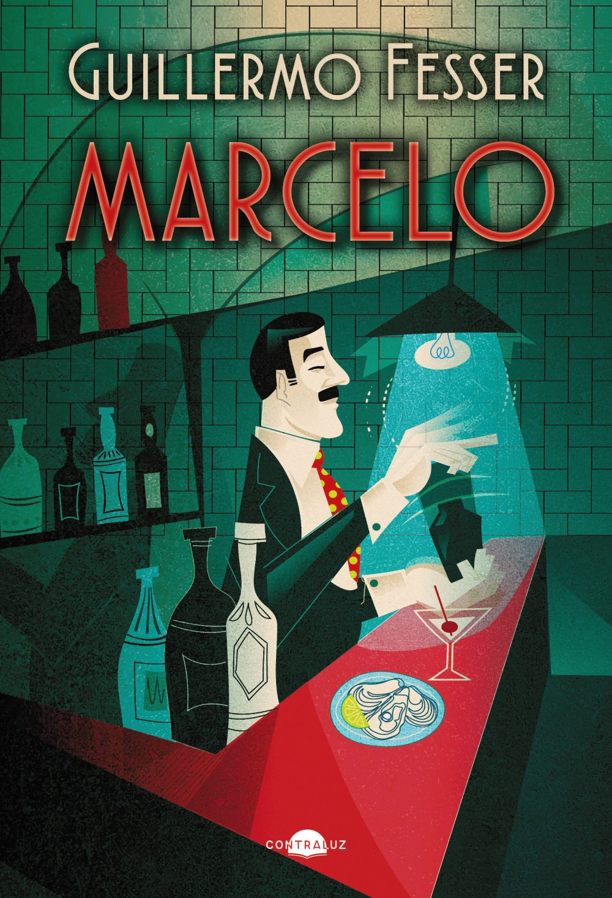

A 55 millas por hora

- La vida tiene unos picos horrorosos». Sonrisas y lágrimas. La misma tarde que te enamoras, se te muere el perro.
- ★ La biografía de una señora que limpia casas puede resultar tan apasionante como la de Gandhi porque la esencia de una buena historia no consiste en lo que haga su protagonista, sino en lo que siente mientras lo está haciendo. La vida no va de impresionar, sino de emocionar, y las emociones las compartimos nobles y villanos por igual.
- el cultivo simbiótico de las tres hortalizas hermanas: la calabaza, el frijol y el maíz.
- El maíz (la hermana mayor) proporciona, con sus tallos largos y robustos, el soporte necesario para que los frijoles trepen y alcancen la luz del sol. El frijol (la hermana media), con sus raíces, fija al terrero un preciado nitrógeno que sirve de alimento a sus hermanas. Y la calabaza (la hermana menor) cubre la tierra con sus grandes hojas, manteniendo la humedad e impidiendo el crecimiento de hierbajos que compitan con ellas por los recursos minerales. Por si fuera poco, estos tres vegetales combinados forman una dieta completa y rica en carbohidratos (el maíz), proteínas (el frijol) y vitaminas (la calabaza). Ya ves tú qué maravilla lo que nos enseñaron los diné
- Creían las navajo que, junto al hilo, iban quedando cosidos también sus pensamientos y, para evitar que una vez terminada la alfombra su alma pudiese quedar atrapada en la tela para siempre, cosían una línea fina de hilo negro que unía el centro del tapiz con uno de sus bordes. Era el weaving pathway, la vía de escape para su espíritu que hoy algunos compradores confunden con un defecto de confección. Nada más lejos de la realidad.
- Se trataba de un navío más robusto que combinaba velas cuadras (para velocidad de viento a favor) con velas latinas triangulares (para maniobrar con el viento en contra) que lo alejaban de los peligrosos arrecifes del extremo sur de África al pasar del Atlántico al Índico. Con la ayuda de las tablas astronómicas de Abraham Zacuto para calcular la posición en alta mar, el revolucionario ingenio fue puesto a prueba en 1488 por almirante Bartolomeu Dias
- Como la tira blanca refleja los rayos del sol y la negra los absorbe, la diferencia térmica que se produce entre ambas activa una corriente de aire que consigue bajar la temperatura corporal de las cebras hasta nueve grados por debajo del termómetro. Ya sabes por qué es mejor no escoger un color liso para la tela de un toldo.
- El ataque inesperado al escuadrón del Pacífico liderado por el contraalmirante Patricio Montojo y Pasarón, considerado un marino de gran habilidad y experiencia, resultó devastador para la Armada española. No fue por falta de determinación y arrojo del bravo almirante que se perdieron los barcos, sino por la desidia en que había caído la clase política española. Si tan solo unas décimas más de visión hubieran empujado las decisiones parlamentarias de Madrid más allá de lo inmediato, en lugar de con una diezmada flota en Filipinas España podría haber contado con el ingenio naval que había causado la profunda admiración de todos los ejércitos del mundo el 8 de septiembre de 1888. El torpedero diseñado por el teniente de navío español Isaac Peral, construido y botado en el Arsenal de la Carraca de San Fernando, Cádiz, era el primer submarino con propulsión eléctrica. Podía sumergirse hasta los treinta metros y tenía una autonomía de 130 millas en superficie. Se alimentaba por una batería de más de 600 acumuladores que movían dos motores de 30 CV cada uno, e iba equipado en la proa con un tubo lanzatorpedos que disparaba con inusitada precisión; todo un hito tecnológico para la época[…]
- Aquella necesidad de unirse ante un enemigo común empezó a crear unos lazos (llenos de contradicciones profundas, eso sí) entre indios y vaqueros; esa mezcla de dependencia, resentimiento, admiración y miedo que ha perdurado hasta nuestros días entre los distintos habitantes del Oeste y que sigue siendo muy difícil de procesar intelectualmente.
- A la pérdida de derechos le siguió, como siempre, el empobrecimiento de sus ciudadanos porque carecían de instituciones a las que recurrir para defenderse:
- Los chefs tenemos la mente preparada para las emergencias porque en una cocina te pasas las horas salvando conflictos —recuerdo que me había comentado en más de una ocasión José Andrés.
- la blanca», y de ahí nacería la frase popular de «estar sin blanca» para cuando se encuentra uno falto de recursos
- Hearst se dio cuenta enseguida de que el interés por aquellos temas iba a llegar a la saturación, y concentró sus esfuerzos en encontrar una «noticia de largo recorrido»: un relato (bautizado por su creador como running story) que terminase cada día con un «continuará» y obligase a los lectores a engancharse y a comprar el periódico a diario.
- el rey del timo periodístico, el poeta de la mentira y el padre de la fábula».
- De un libro de historia hispana subrayas sobre todo modelos: cómo cooperan sistemas distintos (tres hermanas), cómo la naturaleza resuelve problemas (cebras), qué pasa cuando la política mira solo a corto plazo (Peral) y cómo se fabrica la atención (Hearst). Y por encima de todo, que una historia vale por la emoción que transmite.
- 1 oct. 2026 Contraluz Editorial · 22,95 €
- 480 págs. ISBN 979-13-88337-00-0
- eBook ✓ Apple Books España, 14,99 €

Marcelo Sin leerNovela · 2022 · Contraluz, 2022 · 528 págs.El barman ecuatoriano del Oyster Bar de Grand Central: un homenaje a los emigrantes hispanos en EE. UU.
contraluzeditorial.es · Marcelo- A cien millas de Manhattan Sin leerCrónica · 2008 · Aguilar 2008 · Penguin bolsillo 2015
La vida en Rhinebeck, junto al Hudson: héroes anónimos de una América desconocida.
casadellibro.com · A cien millas de Manhattan - Cuando Dios aprieta, ahoga pero bien Sin leerMemorias de una asistenta · 1998 · Temas de Hoy, 1999 · Booket
La vida de Cándida, la asistenta de la familia Fesser, que llegó al cine en 2006. Es la «señora que limpia casas» de tu subrayado nº 13.
es.wikipedia.org · Guillermo Fesser - Bibliografía completa (con Gomaespuma) Para explorarNovela, humor, infantil · Varias editoriales
Incluye Grandes disgustos de la historia de España (con Juan Luis Cano), Mi amigo invisible (2018) y Conoce a Bernardo de Gálvez (2016).
agenciabalcells.com · Guillermo Fesser
- Un libro de historia leído como un manual de sistemas. No subrayas fechas. Subrayas mecanismos: cómo cooperan tres cultivos, cómo una tela deja escapar el alma, cómo una carabela combina dos tipos de vela, cómo se enfrían las cebras, cómo se engancha a un lector y cómo se empobrece un país cuando se queda sin instituciones. Y en el centro, la tesis del propio Fesser (nº 13): una historia no vale por lo que hace su protagonista, sino por lo que siente.
- Storytelling y emoción: «emocionar, no impresionar» (nº 13) y el «picos horrorosos» de Sonrisas y lágrimas (nº 1) sirven de guía para tu curso «Más allá del chat» y para RTVE. La emoción es el contenido, no un adorno.
- Simbiosis: las tres hermanas como modelo de equipo y de IA. Cada una aporta lo que a las otras les falta: estructura (maíz), nutriente (frijol) y protección (calabaza). Es una buena metáfora de la colaboración entre humanos y modelos, o entre agentes: lo que importa no es el mejor componente, sino el reparto de funciones.
- Saber indígena y voces al margen: el weaving pathway que hoy se toma por un «defecto» (nº 4) es justo lo que defiendes al diseñar futuros. Lo que no entendemos no es un error, es otro sistema de valores.
- Cortoplacismo frente a prospectiva: el submarino de Peral (nº 9) es un caso de libro para Tiempo de futuros. España tenía el futuro construido en Cádiz y la política no miró «más allá de lo inmediato».
- Economía de la atención: la running story de Hearst (nº 7) es el antepasado del feed y del cliffhanger de las plataformas, y el nº 8 recuerda su precio: «el poeta de la mentira».
- Derechos, crisis y recursos: perder instituciones empobrece (nº 10); la mente del chef, entrenada en emergencias (nº 11), es un modelo de gestión de crisis; y «estar sin blanca» (nº 14) muestra cómo la economía se queda en el idioma.
- Biomímesis: las rayas de la cebra (nº 12) y la carabela de Dias (nº 5) cuentan lo mismo: el mejor diseño combina principios opuestos, blanco y negro o vela cuadra y latina.
- ❓ ¿Qué «tres hermanas» formaría un equipo humano + IA en tu trabajo? ¿Quién da soporte, quién nutre y quién protege?
- ❓ ¿Qué «submarino de Peral» tenemos hoy delante y estamos dejando pasar por mirar solo a corto plazo?
- ❓ Si Hearst inventó el «continuará», ¿cómo se cuenta una historia que enganche sin convertirse en «el padre de la fábula»?
La biografía de una señora que limpia casas puede resultar tan apasionante como la de Gandhi porque la esencia de una buena historia no consiste en lo que haga su protagonista, sino en lo que siente mientras lo está haciendo. La vida no va de impresionar, sino de emocionar, y las emociones las compartimos nobles y villanos por igual.
Contar con emoción NÚCLEO
1La vida tiene unos picos horrorosos». Sonrisas y lágrimas. La misma tarde que te enamoras, se te muere el perro.
13La biografía de una señora que limpia casas puede resultar tan apasionante como la de Gandhi porque la esencia de una buena historia no consiste en lo que haga su protagonista, sino en lo que siente mientras lo está haciendo. La vida no va de impresionar, sino de emocionar, y las emociones las compartimos nobles y villanos por igual.
Saber indígena SIMBIOSIS
2el cultivo simbiótico de las tres hortalizas hermanas: la calabaza, el frijol y el maíz.
3El maíz (la hermana mayor) proporciona, con sus tallos largos y robustos, el soporte necesario para que los frijoles trepen y alcancen la luz del sol. El frijol (la hermana media), con sus raíces, fija al terrero un preciado nitrógeno que sirve de alimento a sus hermanas. Y la calabaza (la hermana menor) cubre la tierra con sus grandes hojas, manteniendo la humedad e impidiendo el crecimiento de hierbajos que compitan con ellas por los recursos minerales. Por si fuera poco, estos tres vegetales combinados forman una dieta completa y rica en carbohidratos (el maíz), proteínas (el frijol) y vitaminas (la calabaza). Ya ves tú qué maravilla lo que nos enseñaron los diné
4Creían las navajo que, junto al hilo, iban quedando cosidos también sus pensamientos y, para evitar que una vez terminada la alfombra su alma pudiese quedar atrapada en la tela para siempre, cosían una línea fina de hilo negro que unía el centro del tapiz con uno de sus bordes. Era el weaving pathway, la vía de escape para su espíritu que hoy algunos compradores confunden con un defecto de confección. Nada más lejos de la realidad.
Ingenio y naturaleza TÉCNICA
5Se trataba de un navío más robusto que combinaba velas cuadras (para velocidad de viento a favor) con velas latinas triangulares (para maniobrar con el viento en contra) que lo alejaban de los peligrosos arrecifes del extremo sur de África al pasar del Atlántico al Índico. Con la ayuda de las tablas astronómicas de Abraham Zacuto para calcular la posición en alta mar, el revolucionario ingenio fue puesto a prueba en 1488 por almirante Bartolomeu Dias
12Como la tira blanca refleja los rayos del sol y la negra los absorbe, la diferencia térmica que se produce entre ambas activa una corriente de aire que consigue bajar la temperatura corporal de las cebras hasta nueve grados por debajo del termómetro. Ya sabes por qué es mejor no escoger un color liso para la tela de un toldo.
Visión política PROSPECTIVA
9El ataque inesperado al escuadrón del Pacífico liderado por el contraalmirante Patricio Montojo y Pasarón, considerado un marino de gran habilidad y experiencia, resultó devastador para la Armada española. No fue por falta de determinación y arrojo del bravo almirante que se perdieron los barcos, sino por la desidia en que había caído la clase política española. Si tan solo unas décimas más de visión hubieran empujado las decisiones parlamentarias de Madrid más allá de lo inmediato, en lugar de con una diezmada flota en Filipinas España podría haber contado con el ingenio naval que había causado la profunda admiración de todos los ejércitos del mundo el 8 de septiembre de 1888. El torpedero diseñado por el teniente de navío español Isaac Peral, construido y botado en el Arsenal de la Carraca de San Fernando, Cádiz, era el primer submarino con propulsión eléctrica. Podía sumergirse hasta los treinta metros y tenía una autonomía de 130 millas en superficie. Se alimentaba por una batería de más de 600 acumuladores que movían dos motores de 30 CV cada uno, e iba equipado en la proa con un tubo lanzatorpedos que disparaba con inusitada precisión; todo un hito tecnológico para la época[…]
Crisis y derechos INSTITUCIONES
6Aquella necesidad de unirse ante un enemigo común empezó a crear unos lazos (llenos de contradicciones profundas, eso sí) entre indios y vaqueros; esa mezcla de dependencia, resentimiento, admiración y miedo que ha perdurado hasta nuestros días entre los distintos habitantes del Oeste y que sigue siendo muy difícil de procesar intelectualmente.
10A la pérdida de derechos le siguió, como siempre, el empobrecimiento de sus ciudadanos porque carecían de instituciones a las que recurrir para defenderse:
11Los chefs tenemos la mente preparada para las emergencias porque en una cocina te pasas las horas salvando conflictos —recuerdo que me había comentado en más de una ocasión José Andrés.
14la blanca», y de ahí nacería la frase popular de «estar sin blanca» para cuando se encuentra uno falto de recursos
Prensa y atención MEDIOS
7Hearst se dio cuenta enseguida de que el interés por aquellos temas iba a llegar a la saturación, y concentró sus esfuerzos en encontrar una «noticia de largo recorrido»: un relato (bautizado por su creador como running story) que terminase cada día con un «continuará» y obligase a los lectores a engancharse y a comprar el periódico a diario.
8el rey del timo periodístico, el poeta de la mentira y el padre de la fábula».
Qué dicen juntos tus 14 subrayados
Un libro de historia leído como un manual de sistemas. No subrayas fechas. Subrayas mecanismos: cómo cooperan tres cultivos, cómo una tela deja escapar el alma, cómo una carabela combina dos tipos de vela, cómo se enfrían las cebras, cómo se engancha a un lector y cómo se empobrece un país cuando se queda sin instituciones. Y en el centro, la tesis del propio Fesser (nº 13): una historia no vale por lo que hace su protagonista, sino por lo que siente.
Cómo conecta con tus intereses.
- Storytelling y emoción: «emocionar, no impresionar» (nº 13) y el «picos horrorosos» de Sonrisas y lágrimas (nº 1) sirven de guía para tu curso «Más allá del chat» y para RTVE. La emoción es el contenido, no un adorno.
- Simbiosis: las tres hermanas como modelo de equipo y de IA. Cada una aporta lo que a las otras les falta: estructura (maíz), nutriente (frijol) y protección (calabaza). Es una buena metáfora de la colaboración entre humanos y modelos, o entre agentes: lo que importa no es el mejor componente, sino el reparto de funciones.
- Saber indígena y voces al margen: el weaving pathway que hoy se toma por un «defecto» (nº 4) es justo lo que defiendes al diseñar futuros. Lo que no entendemos no es un error, es otro sistema de valores.
- Cortoplacismo frente a prospectiva: el submarino de Peral (nº 9) es un caso de libro para Tiempo de futuros. España tenía el futuro construido en Cádiz y la política no miró «más allá de lo inmediato».
- Economía de la atención: la running story de Hearst (nº 7) es el antepasado del feed y del cliffhanger de las plataformas, y el nº 8 recuerda su precio: «el poeta de la mentira».
- Derechos, crisis y recursos: perder instituciones empobrece (nº 10); la mente del chef, entrenada en emergencias (nº 11), es un modelo de gestión de crisis; y «estar sin blanca» (nº 14) muestra cómo la economía se queda en el idioma.
- Biomímesis: las rayas de la cebra (nº 12) y la carabela de Dias (nº 5) cuentan lo mismo: el mejor diseño combina principios opuestos, blanco y negro o vela cuadra y latina.
Preguntas para seguir leyendo
- ¿Qué «tres hermanas» formaría un equipo humano + IA en tu trabajo? ¿Quién da soporte, quién nutre y quién protege?
- ¿Qué «submarino de Peral» tenemos hoy delante y estamos dejando pasar por mirar solo a corto plazo?
- Si Hearst inventó el «continuará», ¿cómo se cuenta una historia que enganche sin convertirse en «el padre de la fábula»?
Otras obras de Guillermo Fesser
El barman ecuatoriano del Oyster Bar de Grand Central: un homenaje a los emigrantes hispanos en EE. UU.
contraluzeditorial.es · MarceloLa vida en Rhinebeck, junto al Hudson: héroes anónimos de una América desconocida.
casadellibro.com · A cien millas de ManhattanLa vida de Cándida, la asistenta de la familia Fesser, que llegó al cine en 2006. Es la «señora que limpia casas» de tu subrayado nº 13.
es.wikipedia.org · Guillermo FesserIncluye Grandes disgustos de la historia de España (con Juan Luis Cano), Mi amigo invisible (2018) y Conoce a Bernardo de Gálvez (2016).
agenciabalcells.com · Guillermo FesserNo encontré ningún libro de Fesser titulado «Cuerpos especiales» en su bibliografía (agencia Balcells, Wikipedia, BNE); con Juan Luis Cano (Gomaespuma) firmó libros de humor como Grandes disgustos de la historia de España.